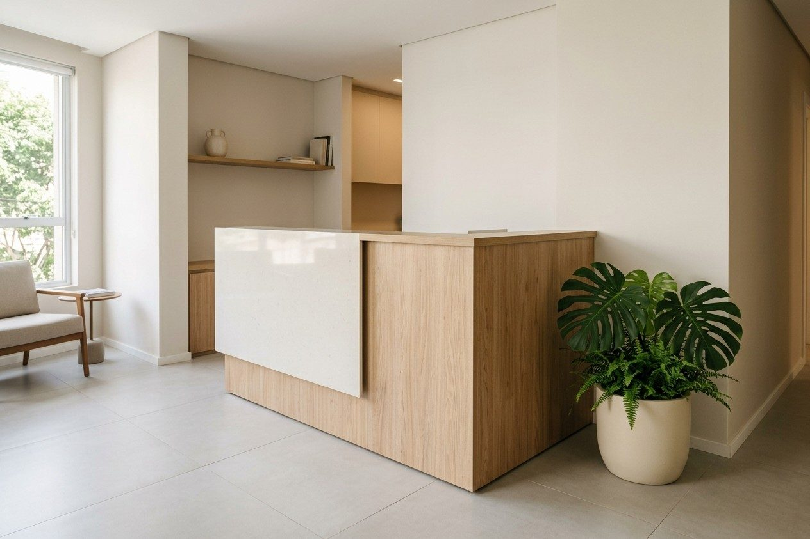
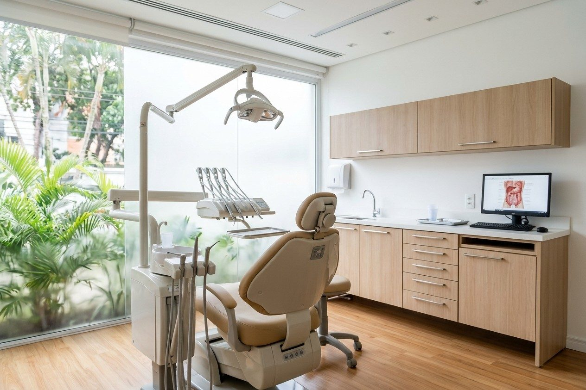

Seu atendimento odontológico, com hora marcada
A equipe explica o que será feito e conversa sobre suas dúvidas antes de começar. Atendimento no bairro Funcionários, em Belo Horizonte.
Horários desta semana
Agendar avaliaçãoEscolha um horário e a mensagem já vai pronta para o WhatsApp.

Serviços
- Com horário marcado
Avaliação odontológica
Consulta para entender a queixa, examinar a saúde bucal e conversar sobre condutas possíveis.
- Frequência indicada em consulta
Limpeza e prevenção
Cuidados preventivos conforme a avaliação e a necessidade de cada pessoa.
- Plano definido após exame
Restauração
Avaliação e tratamento de dentes com alteração ou perda de estrutura.
- Número de sessões varia
Tratamento de canal
Avaliação de dor ou comprometimento pulpar e encaminhamento do cuidado indicado.
- Acompanhante responsável
Orientação infantil
Atendimento odontológico para crianças, com conversa adequada à idade.
Conversa clara antes do atendimento
A Clínica Sorriso Amplo atende adultos e crianças em Belo Horizonte. Na consulta, a dentista ouve o que incomoda, faz a avaliação necessária e explica as opções indicadas.
O consultório fica no Funcionários, com horários combinados para reduzir a espera. Para urgências, ligue antes para a equipe orientar o atendimento. CRO-MG 00.000.

Perguntas frequentes
O que levo na primeira consulta?
Leve documento com foto, exames recentes relacionados à queixa e uma lista dos medicamentos que usa.
Atendem crianças?
Sim. Marque o horário e informe a idade da criança para organizarmos o atendimento.
Posso marcar por WhatsApp?
Pode. Envie seu nome, o motivo da consulta e os períodos em que consegue vir.
Como funciona se eu estiver com dor?
Ligue para a clínica e explique a situação. A equipe verifica a disponibilidade e orienta o próximo passo.
Fale com a gente
Rua Ceará, 1.185, Funcionários, Belo Horizonte - MG
Belo Horizonte, MG
- Seg a qui: 9h às 18h
- Sex: 9h às 16h
WhatsApp (31) 90000-0000
Telefone (31) 90000-0000
contato@exemplo.com.br